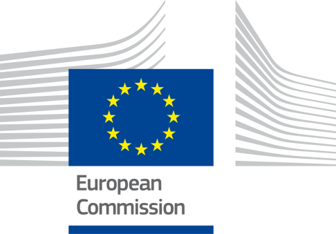
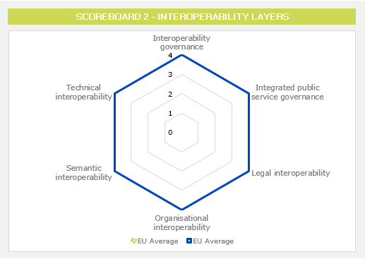
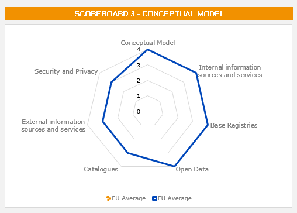
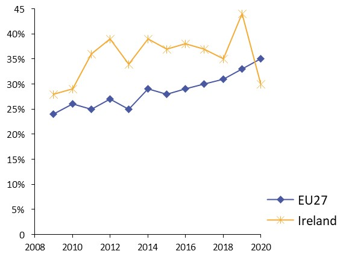

ISA2
Digital Public Administration factsheet 2022
European Union
ISA2
Table of Contents
Executive Summary 3
1 Profile 5
2 Governance 13
3 Political Initiatives for Digital Public Administration in the European Union 17
4 Legislative Instruments for Digital Public Administration in the European Union 30
5 Funding programmes for Digital Public Administration in the European Union 42
6 Digital Public Administration Infrastructure 48
7 Digital Public Administration Services 54
Executive Summary
Over the past two years, the quality of public administrations has been confirmed to be the key success factor towards COVID-19 recovery, as it enables economic prosperity, social progress and fairness. This was further stressed by the European Commission through its Staff Working Document ‘Supporting Public Administrations to deliver reforms and prepare for the future’. Following a period where the reliance on digital public services increased, continuing to implement strategies and funding programmes that foster the coordinated modernisation of public administrations in the Member States prevails as an important course of action. This can also be seen through the Member States’ National Recovery and Resilience Plans, where the digitalisation and modernisation of the public sphere play an important role.
The EU remains focused on adapting and overcoming the challenges of globalisation, by narrowing the gap between the leading and lower-performing Member States, as well as increasing the connectivity and security of services across borders for the benefit of consumers, business and society.
This factsheet presents an overview of the European landscape in terms of digitalisation of public administrations and interoperability, outlines the main EU actors responsible for this transition and offers an overview of the primary political initiatives, legislative instruments and funding programmes supporting the digitalisation of the European public administration and interoperability in the European Union.
The EU’s main actors and institutions responsible for the coordination and implementation of digital public administration services and the implementation of legislative initiatives for the modernisation of the public sector are overseen by the Executive Vice-President-designate for a Europe fit for the Digital Ages Ms. Vestager. Ms. Vestager is the highest representative of the EU charged with ensuring Europe’s digital development, with the support of the Commissioner for Internal Market, Mr. Breton, the Directorate‑General for Communications Networks, Content and Technology (CNECT) and the Directorate- General for Informatics (DIGIT).
On top of recent political initiatives stand out the strategy Shaping Europe’s Digital Future, the Declaration on European Digital Rights, the European Data Strategy, as well as an SME Strategy for a sustainable and digital Europe, or the White Paper on Artificial Intelligence, part of the European Commission’s top priorities for 2019-2024. Further political initiatives driving the digitalisation of the public sector were presented including the EU’s Cybersecurity Strategy for the Digital Decade and the Open-Source Strategy 2020-2023. Additionally, the European Commission also put forward new legislative initiatives, such as the Data Act and the upcoming Cyber Resilience Act, meant to harmonise the rules on digital public administration in the EU’s Member States.
The chapter on the funding instruments available to the Member States, that help contribute to the public sector modernisation at national and regional levels, adds the Digital Europe Programme (DEP), set up the strategic digital capacities of the EU and promote a far-reaching deployment of new technologies, and Horizon Europe, the key funding programme for research and innovation, to the Connecting Europe Facility (CEF) outlined in detail later in the document.
Finally, the chapter on the Digital Public Administration Infrastructure presents the networks for cross-border inter-administrative operations and communication, while the chapter on Digital Public Administration Services showcases the existent cross-border public services for citizens, businesses and public administrations through a single access point.
Overview of the EU Profile
1
Profile
Digital Public Administration Indicators
The following graphs present data for the latest Digital Public Administration Indicators in the European Union, as outlined by Eurostat at the time of this factsheet’s preparation.
Interoperability State of Play
In 2017, the European Commission published the European Interoperability Framework (EIF) to give specific guidance on how to set up interoperable digital public services through a set of 47 recommendations. The picture below represents the three pillars of the EIF around which the EIF Monitoring Mechanism was built to evaluate the level of implementation of the EIF within the Member States. It is based on a set of 71 Key Performance Indicators (KPIs) clustered within the three main pillars of the EIF (Principles, Layers and Conceptual model), outlined below.
Source: European Interoperability Framework Monitoring Mechanism 2021
For each of the three pillars, a different scoreboard was created to breakdown the results into their main thematic areas (i.e. the 12 principles of interoperability, the interoperability layers and the components of the conceptual model). The thematic areas are evaluated on a scale from one to four, where one means a lower level of implementation and 4 means a higher level of implementation. The graphs below show the result of the third EIF Monitoring Mechanism data collection exercise within the 27 Member States in 2021.
Source: European Interoperability Framework Monitoring Mechanism 2021
The results in Scoreboard 1 show an overall good implementation of the EIF principles for the 27 Member States with multiple principles scoring at 4. Areas of improvement are concentrated in the Principles 1 (Subsidiarity and Proportionality), 7 (Inclusion and Accessibility), 9 (Multilingualism) and 12 (Assessment of Effectiveness and Efficiency), for which the score of 3 shows an upper-medium performance in the implementation of the corresponding recommendations.
Principle 1 requires European countries’ decision-making processes to follow the objectives of subsidiarity and proportionality. This principle is assessed through Recommendation 1, which states that European countries should “ensure that national interoperability frameworks and interoperability strategies are aligned with the EIF and, if needed, tailor and extend them to address the national context and needs”. The result of 3 for Recommendation 1 and consequently for Principle 1, at European level, shows a partial implementation of EIF recommendations in existing or ongoing NIFs and policies. The analysis of the results revealed that the number of countries reporting a high level of alignment of their NIFs and strategies with the EIF decreased from 16 in 2020 to 13 in 2021.
Principle 7 calls for inclusion and accessibility throughout the development cycle of a European public service in terms of design, information, content and delivery. This principle should be taken into account in order to ensure that all citizens have access to European public services and that they can take full advantage of the opportunities offered by new technologies to access and use these services. This principle is assessed through Recommendation 14 assessing the countries’ compliance with the European accessibility standards of the Directive (EU) 2016/2102 on the accessibility of the websites and mobile applications of public sector bodies. When analysing the overall European countries’ performance in implementing Recommendation 14, the results revealed a partial implementation of the accessibility standards set forth by the Directive (EU) 2016/2102 on the accessibility of the websites and mobile applications of public- sector bodies.
Principle 9 promotes multilingualism when designing European public services to make them accessible and usable by anyone that may need them, therefore the underlying Recommendation 16 calls for European countries to “use information systems and technical architectures that cater for multilingualism when establishing a European public service and decide on the level of multilingualism support based on the needs of the expected users”. The implementation score for this recommendation is computed by assessing the extent to which users of each of the 21 proposed procedures across the 7 life events (i.e. Birth, Residence, Studying, etc.) of the Single Digital Gateway Regulation (Regulation (EU) 2018/1724) can access instructions for completing the procedure in an official EU language that is widely understood by the largest possible number of cross-border users. The results of the EIF Monitoring Mechanism with regard to multilingualism showed a heterogeneous implementation of the principle. For instance, the possibility of accessing instructions for completing the procedures in an official EU language is not always ensured in the European countries, especially for procedures related to moving.
Principle 12 assesses the extent to which nine key elements, i.e. return on investments, total cost of ownership, reusability, adaptability, risks, administrative burden, simplification of administrative processes, user satisfaction and user-centricity, are taken into account in the evaluation of the effectiveness and efficiency of a European public service. The principle is evaluated through Recommendation 19 which states that European public administrations should “evaluate the effectiveness and efficiency of different interoperability solutions and technological options considering user needs, proportionality and balance between costs and benefits”. Overall, the results at the European level for Recommendation 19, and thus for Principle 12, indicated a partial implementation with an average score of three. In particular, the results showed that return on investment and adaptability are the least considered when assessing the effectiveness and efficiency of public services, while simplification of administrative processes and reusability are more commonly taken into account across Europe.

Source: European Interoperability Framework Monitoring Mechanism 2021
For the implementation of interoperability layers assessed for Scoreboard 2, the 27 Member States show on average a very good performance in implementing all layers with the score of 4. However, potential areas of improvement to reinforce the European Union’s implementation of the recommendations under Scoreboard 2 are concentrated in the areas of interoperability governance to ensure a full implementation of all recommendations associated with this area.
The implementation of the interoperability governance layer is evaluated through recommendations 20 to 24, which address two aspects: the implementation of holistic governance for interoperability activities across administrative levels and sectors, the identification and selection of common standards and specifications to facilitate interoperability. With respect to the interoperability governance layer, there have been significant improvements mainly regarding the implementation of a holistic governance across all administrative levels and sectors, and the implementation of defined processes for the selection and adoption of standards and specifications. More specifically, almost all European countries now provide interoperability governance with a holistic approach across all administrative levels and sectors, with the exception of three countries that are still in the process of doing so.

Source: European Interoperability Framework Monitoring Mechanism 2021
The average scores assessing the Conceptual Model in Scoreboard 3 of the 27 Member States show a good performance in the implementation of recommendations associated with the conceptual model, internal and external information sources and services, base registries and open data. However, some improvements can be made in implementing recommendations related to catalogues, external information sources and services as well as in the area of security and privacy.
Catalogues are a key component of the conceptual model for integrated public services and aim at supporting the easy access to reusable resources (e.g. services, data, software). A variety of catalogues exist ranging from directories of services, to libraries of software components and metadata catalogues. The description of the content provided is equally important to the resources it contains as it enables interoperability in-between different catalogues. The implementation of interoperable catalogues is evaluated through Recommendation 44 of the EIF Monitoring Mechanism calling on European countries to “put in place catalogues of public services, public data, and interoperability solutions and use common models for describing them”. The assessment of this recommendation takes into account nine main types of catalogues that European public bodies should have at their disposal to design integrated and interoperable public services, i.e. catalogues of public data, directories of services, libraries of software components, open data portals, registries of base registries, metadata catalogues, catalogues of standards, catalogues of specifications and catalogues of guidelines. The results, at European level, for this particular indicator outlined a partial implementation of these key catalogues within public administrations. Indeed, while open data portals and catalogues of public data are used in a vast majority of European countries, it appears that other types of catalogues, such as libraries of software components and catalogues of specifications and guidelines are yet to be implemented uniformly across Europe.
The EIF fosters the use of external information sources and services by European public administrations in the design of interoperable public services. Indeed, public administrations need to leverage services provided by third parties outside their organisational boundaries, such as payment services provided by financial institutions or connectivity services provided by telecommunications providers. They also need to tap into external information sources such as open data and data from international organizations, chambers of commerce, etc. The use of external information sources and services is assessed through Recommendation 45 calling on European public administrations to “use external information sources and services while developing European public services, where useful and feasible to do so” measured by the extent to which public administrations are using external information sources and services while developing public services. The 2021 results of the EIF Monitoring Mechanism revealed that European countries insufficiently rely on external sources and services for the development of their public services. On the one hand, it appears that the use of Internet of Things sources (e.g. sensors) and social web applications is quite low across Europe. On the other hand, the use of payment services provided by financial institutions or other actors, connectivity services provided by telecommunications providers, open data, data from other organisations (e.g. international organisations, chambers of commerce, etc...), eID and eSignature are much more widespread among European public administrations.
The principle of security and privacy is a crucial element to embed by design in the development of interoperable public services. Public services should follow the privacy- by-design and security-by-design approach to secure their complete infrastructure and should be compliant with the legal requirements regarding data protection and privacy. The EIF therefore calls on European countries to “consider the specific security and privacy requirements and identify measures for the provision of each public service according to risk management plans” (Recommendation 46) and “use trust services according to the Regulation on eID and Trust Services as mechanisms that ensure secure and protected data exchange in public services” (Recommendation 47). The implementation of this recommendation is assessed through the application of privacy and security elements and measures (e.g. risk management and business continuity plans and eArchive) and the number of trust services providers by country. The score for security and privacy at the European level, showed an overall good implementation of Recommendation 46 within national frameworks, with an increase in the implementation of all privacy and security elements and measures, but with the exception of risk management. However, the scores for Recommendation 47 are heterogeneous, as the number of trust service providers present on national trusted lists complying with the eIDAS Regulation varies across countries and remains insufficient in some of them.
An in-depth analysis of the European results in the 2021 edition of the EIF Monitoring Mechanism is available within second chapter of the State of Play report on digital public administration and interoperability in Europe. Whereas additional data on specific Member States’ results on the EIF Monitoring Mechanism is available online through interactive dashboards.
eGovernment State of Play
The graph below shows the results of the latest eGovernment Benchmark report, which monitors the development of eGovernment in Europe based on specific indicators. These indicators are clustered within four main top-level benchmarks:
- User Centricity – indicates to what extent (information about) a service is provided online and how this is perceived.
- Transparency – indicates to what extent governments are transparent regarding:
- their own responsibilities and performance, ii) the process of service delivery, and iii) personal data.
- Cross-Border Mobility – indicates to what extent EU citizens and businesses can use online services in another country.
- Key Enablers – indicates the extent to which four technical pre-conditions are available online. These are: Identification (eID), Electronic documents (eDocuments), Authoritative Sources, and Digital Post.
As shown in the figure below, the European leaders are Malta (96%) and Estonia (90%). Their digital governments are the most user-centric, transparent, technologically enabled and open to users from other European countries. The EU27+ overall performance averages at 68%.

Source: eGovernment Benchmark Report 2021 Insight Report

Digital Public Administration Governance
2
Governance
Executive Vice-President for a Europe fit for the Digital Age
As Executive Vice-President for a Europe fit for the Digital Age, Ms. Margrethe Vestager has a dual function. She chairs the Commissioners’ Group on a Europe fit for the Digital Age and, in addition, she is responsible for the competition portfolio. Her mission is to ensure all policy dimensions are fully considered. She is also accountable for the Secretariat- General and the Directorate-General for Competition.
Commissioner for Budget and Administration
As Commissioner for Budget and Administration, Mr. Johannes Hahn is responsible for the DG for Budget, the DG for Human Resources and Security; the DG for Informatics (DIGIT); the DG for Translation and the DG for Interpretation. Similarly, he is responsible for the Office for the Administration and Payment of Individual Entitlements; the Office for Infrastructure and Logistics in Brussels; the Office for Infrastructure and Logistics in Luxembourg; the European Personnel Selection Office; the Publications Office of the European Union and the European School of Administration. Respecting its investigative independence, he is also responsible for the European Anti-Fraud Office. Mr. Hahn oversees implementing the full digitalisation of the Commission and ensures that staff acquire the necessary digital skills.
Commissioner for Internal Market
As Commissioner for Internal Market, Mr. Thierry Breton is responsible of the new DG for Defence Industry and Space, as well as the DG for Communications Networks, Content and Technology and the DG for Internal Market, Industry, Entrepreneurship and SMEs. He works under the guidance of the Executive Vice-President for a Europe fit for the Digital Age.
Directorate-General for Informatics (DIGIT)
The mission of the Directorate-General for Informatics (DIGIT), led by Ms. Veronica Gaffey, is to deliver digital services, enabling the effective implementation of EU policies and to support the Commission's internal administration.
With this goal in mind, DIGIT, as a trusted partner has the responsibility to provide the EC, and whenever appropriate other European Institutions and bodies, with high quality and innovative
- Workplace solutions: creating new ways of working and collaborating for staff;
- Business solutions: delivering information systems supporting rationalised business processes within the framework of the corporate IT Governance strategy;
- Infrastructure solutions: providing reliable, cost-effective and secure infrastructure and services;
- Effective solutions: aligning IT investments with business priorities, facilitating relationships with our strategic partners, balancing risk with business value for the Institution.
- Support the modernisation of public administrations by promoting and facilitating interoperability so that European public administrations can work seamlessly and together across boundaries - Interoperability solutions.
DG DIGIT is also accountable for the coordination of the eCommission strategy and its implementation via the delivery of IT systems and services. Moreover, through the ISA² programme, which was replaced by Interoperable Europe, DIGIT facilitated the deployment of pan-European eGovernment services to administrations, citizens and
enterprises/businesses. Finally, it is also responsible for developing the building blocks for digital government, under the Digital Europe Programme, the funding programme focused on bringing and ensuring a wide use of digital technologies by businesses, citizens and public administrations.
DIGIT Unit D2 – Interoperability Unit
The Unit is led by Ms. Leontina Sandu and currently manages and coordinates interoperability-related affairs, some interoperability solutions and EU programmes, and as a matter of fact will be managing the execution of specific Objective 5 of the Digital Europe Programme, particularly the Common Service Platform (CSP) and the Interoperability Knowledge and Support Centre (IKSC).
The Unit supports the development of digital solutions which enable European societies to benefit from interoperable cross-border and cross-sector public services.
Directorate-General for Communications Networks, Content and Technology (CONNECT)
The mission of the Directorate-General for Communications Networks, Content and Technology (CONNECT), led by Mr. Roberto Viola, is to conceive and implement the policies required to create a digital single market to foster growth and employment. The aim is to enable citizens, businesses and public administrations to seamlessly and fairly access and provide digital goods, content and services.
DG CONNECT is thus responsible for fostering a modern, secure, open and pluralistic society and for helping drive the digital transformation of European industry and public services through the use of innovative digital technology, among others.
DG CONNECT Unit H4 – eGovernment & Trust
The mission of the Unit is to advance the quality and innovation of public administrations and accelerate the large-scale public sector and private sector use of trusted identification and trust services in the digital single market.
The Unit promotes modernisation of public services to meet citizens' expectations regarding efficiency, quality, transparency, accountability, user centricity and inclusiveness.
Directorate-General for Internal Market, Industry, Entrepreneurship and SMEs (GROW)
The mission of the Directorate-General for Internal Market, Industry, Entrepreneurship and SMEs (GROW), led by Ms. Kerstin Jorna, is to enhance the European business environment by developing and carrying out the Commission’s policies related to business and industry. The Directorate- General is also accountable for the Single market policies. With this goal in mind, GROW, as a trusted partner, has the responsibility to foster entrepreneurship and growth by reducing the administrative burden on small businesses and by facilitating access to funding for SMEs and to help turn the EU into a smart, more sustainable and inclusive economy.
DG GROW will also be responsible for the implementation of the Once Only Principle by the end of 2023. It will facilitate the sharing of data between public entities, so citizens are only required to enter their information once. From 2023, it is envisaged that public administrations will be able to reuse or share data and documents in a transparent and secure way.
Other DGs
Within the European Commission, individual Directorates-General are responsible for the implementation of IT solutions within the mandate of their respective competencies:
- DG JUST – for a modern judicial system;
- DG EMPL – for policy in the field of employment, social affairs and inclusion, which is a shared competence between the EU and its member countries;
- DG REGIO – for strengthening economic, social and territorial cohesion by reducing disparities between regional and national levels of development in the European Union.
- DG REFORM – for providing tailor-made support to all EU countries for their institutional, administrative and growth-enhancing reforms.
- Internal Audit Service (IAS) of the European Commission
Operating under the responsibility of Mr. Didier Reynders, European Commissioner for Justice, the Internal Audit Service (IAS) is a core part of the internal audit system for the European Commission and EU agencies. The mission of the IAS is to provide independent, objective assurance and consulting services designed to add value and improve the operations of the European Commission.

Digital Public Administration Political Initiatives
3
Political Initiatives for Digital Public Administration in the European Union
Political Initiatives on Digital Public Administration
The modernisation of the European public administration is covered by the European Union’s main political initiatives (e.g. strategies, frameworks and action plans). This coordinated approach is coupled by a common vision of public services, increased provision of digital public services, enhanced cross-border interoperability and facilitated user centricity.
At the political level, the main initiatives driving public sector modernisation are the strategy on Shaping Europe’s Digital Future, the 2030 Digital Compass, the Declaration on European Digital Rights, the White Paper on Artificial Intelligence as well as a new EU space-based global secure communications system, an SME Strategy for a sustainable and digital Europe, an Action Plan for better implementation and enforcement of single market rules, an Industrial Strategy for a globally competitive, green and digital Europe, the European Data Strategy as well as a new Roadmap on security and defence technologies.
These initiatives are a key part of the European Commission’s priority for 2019-2024, A Europe Fit for the Digital Age, and the latter visions and principles were confirmed in the Berlin Declaration on Digital Society and Value-based Digital Government. The Declaration of 8 December 2020 represents the highest level of commitment of Member States to build a Digital Europe and to make “value-based digital transformation by addressing and ultimately strengthening digital participation and digital inclusion in our societies”. The Declaration is built on previous initiatives such as the Tallinn Declaration and the Council of the EU Conclusions on the EU eGovernment Action Plan 2016-2020, aiming to ensure user-centric and cross-border digital public services of excellence for citizens and businesses.
Furthermore, within the annual European Semester process, the Commission and the Council publish Country Specific Recommendations and other official documents online, such as the European Commission Work Programme 2022, addressing topics related to modernisation of public administration.
Shaping Europe’s Digital Future
The strategy on Shaping Europe’s Digital Future covering the period of 2019-2024, is the European Union’s approach to a digital transformation that will address how the European Union should continue to meet new risks and challenges posed by digital technology. It is based on the following three pillars, designed to ensure that Europe seizes the opportunities raised by digital transformation, while giving citizens, businesses and governments control:
- Technology that works for the people - investing in digital competences for all Europeans; further protecting people from cyber threats; and ensuring Artificial Intelligence is developed in ways that respect people’s rights;
- A fair and competitive digital economy - enabling a vibrant community of innovative and fast-growing start-ups and SMEs to access finance and to expand; proposing a Digital Services Act to strengthen the responsibility of online platforms; and ensuring that all companies compete in Europe on fair terms;
- Open, democratic and sustainable society - using technology to help Europe become climate-neutral by 2050; empowering citizens with better control and protection of their data; and creating a European health data space to foster targeted research, diagnosis and treatment.
The three pillars aim to help the European Union establish itself as a global role model for the digital economy by coordinating efforts between Member States, regions, civil society and the private sector. By setting the global standards for the technological development, Europe will ensure that the inclusion and respect of every human being is being considered. Furthermore, the Union will support developing economies transitioning to digital technologies and help to develop digital standards that can be promoted and referred to internationally.
In response to the coronavirus pandemic and the new challenges brought upon the European Union, the European Commission has been working on coordinating, complementing, and initiating measures based on the following digital technologies:
- Data, artificial intelligence and supercomputers;
- Telecommunications, networks and connectivity;
- Online platforms and disinformation;
- Skills, collaborative working and creativity; and,
- Cybersecurity, trust and safety online.
2030 Digital Compass: the European way for the Digital Decade
The 2030 Digital Compass is a strategy launched on 9 March 2021 that sets objectives to achieve EU’s vision for the digital future. The strategy identifies the main goals through four priority areas:
- Digitally skilled population and highly skilled digital professionals, fostered by the development of a high-performing digital education ecosystem and by an effective policy to promote links with and attract talent from all over the globe, which is essential to reinforce the resilience and increase the trust of in digital products and online services from the society;
- Secure and performant sustainable digital infrastructures, that will allow Europe to achieve digital leadership, by enabling other technological developments, supporting the industry’s competitive edge and every business and citizen to fully participate in the digital society;
- Digital transformation of businesses, with the integration of digital technologies such as 5G, the Internet of Things, edge computing, Artificial Intelligence, robotics and augmented reality into new products, new manufacturing processes and new business models to ensure a fair and competitive digital economy;
- Digitalisation of public services, providing for easy-to-use, efficient and personalised services and tools with high security and privacy standard ensuring that it will be fully accessible for everyone, including persons with disabilities.
A public discussion of the formulation of a set of digital principles, that will guide the EU and Member States in designing the digital rules and regulations that will benefit the digitalisation for all citizens, was launched by the commission on 12 May 2021. The framework of digital principles will promote and uphold the EU values in the digital space and ensure that citizens are fully empowered through access to affordable, secure and high-quality connectivity and basic digital skills.
The implementation of the strategy will also be supported by the polling of resources between Member States and EU for key technological multi-country projects that will address gaps in the identified critical capacities of the EU and support an interconnected, interoperable and secure Digital Single Market.
On 26 January 2022, building on previous initiatives including the Tallinn Declaration on eGovernment, the Berlin Declaration on Digital Society and Value-based Digital Government, and the Lisbon Declaration, the Commission proposed a Declaration on European Digital Rights with the aim to inform people and provide a reference for policymakers and digital operators in their actions in the digital environment. More specifically, the Declaration has at its core key rights and principles for the digital transformation, such as placing people and their rights at its centre, supporting solidarity and inclusion, ensuring the freedom of choice online, fostering participation in the digital public space, increasing safety, security and empowerment of individuals, and promoting the sustainability of the digital future.
The Berlin Declaration on Digital Society and Value-based Digital Government
The Berlin Declaration on Digital Society and Value-based Digital Government of 2020, henceforth referred to as Berlin Declaration, was preceded by the Tallinn Declaration. The Berlin Declaration reaffirms and acknowledges the importance of the public sector in the European Single Market, taking the service-oriented and citizen-centric principles formulated in the Tallinn Declaration a step forward.
The Berlin Declaration reiterates the common political commitment of the Commission and the Member States to continue investing in high quality, user-centric and seamless cross-border digital public services. By signing the document, the Member States pledged to adopt the following 7 principles:
- Validity and respect of fundamental rights and democratic values in the digital sphere;
- Social participation and digital inclusion to shape the digital world;
- Empowerment and digital literacy, allowing all citizens to participate in the digital sphere;
- Trust and security in digital government interactions, allowing everyone to navigate the digital world safely, authenticate and be digitally recognised within the EU conveniently;
- Digital sovereignty and interoperability, as a key in ensuring the ability of citizens and public administrations to make decisions and act self-determined in the digital world;
- Human-centred systems and innovative technologies in the public sector, strengthening its pioneering role in the research on secure and trustworthy technology design;
- A resilient and sustainable digital society, preserving our natural foundations of life in line with the Green Deal and using digital technologies to enhance the sustainability of our health systems.
Interoperability
Interoperability Action Plan supporting the implementation of the revised European Interoperability Framework
The revised European Interoperability Framework (EIF), maintained under the ISA² programme, was adopted on 23 March 2017. The framework provided specific guidance on how to set up interoperable digital public services. It offers public administrations a set of 47 concrete recommendations on how to improve governance of their interoperability activities, establish cross-organisational relationships, streamline processes supporting end-to-end digital services, and ensure that both existing and new legislation do not compromise interoperability efforts.
In October 2021, a Study supporting the evaluation of the implementation of the EIF was written by CEPS and published by the Commission with the purpose of assessing whether relevant recommendations should become part of a mandatory instrument. The Commission is currently working on the 2022 evaluation of the EIF, which has been conducted in consultation with relevant stakeholders and will be published soon. The Commission is also currently working on the Interoperable Europe Act, setting up a new governance framework to further foster digital policymaking and ensuring that the current EIF is aligned with the Member States’ needs and expectations.
The revised EIF is accompanied by the Interoperability Action Plan, outlining priorities to support the implementation of the EIF. The Action Plan consists of 22 actions, grouped into five focus areas:
- Ensuring governance, coordination and sharing of interoperability initiatives;
- Developing interoperability solutions to foster collaboration between organisations;
- Engaging stakeholders and raising awareness of interoperability;
- Developing, maintaining and promoting key interoperability enablers;
- Developing, improving and promoting supporting instruments for interoperability.
As the ISA² programme came to an end in December 2020, the European Commission evaluated it along with the European Interoperability Framework and presented Interoperable Europe, a reinforced public sector interoperability strategy committed to transform the public administrations in Europe and help them in their digital transformation.
An expert group on Interoperability of European Public Services has also been formed whose goal is to identify and exchange food practices when implementing the EIF, to provide the Commission with opinions, analysis and reports on interoperability of public services, to identify and assess the legal, organisation, semantical and technical obstacles preventing the set-up of interoperable European public services, among others.
For regional and local interoperability, the proposal on the European Interoperability Framework for Smart Cities and Communities (EIF4SCC) aims to support local administrations and policy makers in offering interoperability services to citizens and businesses by providing definitions, principles, recommendations, practical use cases and a common model that will enable public service delivery across domains, cities, regions and borders.
The EIF4SCC is managed by DG CONNECT under the framework of the Living-in.eu movement. This initiative aims to roll out interoperable urban digital platforms and a set of standards and technical specifications, such as the Minimum Interoperability Mechanisms (MIMs).
Key enablers
Access to Public Information
European Data Strategy
The European Data Strategy communication, as published on 19 February 2020, outlines a vision of a genuine single market for data which tackles the problems that have been identified through various policy measures and funding. The strategy is based on four pillars, as follows:
- Cross-sectoral governance framework for data and access use – Key actions include proposing a legislative framework for the governance of common European data spaces; Enacting legislation on high-value data sets; Proposing a Data Act, where possible; and analysing the importance of data in the digital economy and reviewing the existing policy framework in this area.
- Investments in data and strengthening Europe’s capabilities and infrastructures for hosting, processing and using data, interoperability – Key actions include investing in a high-impact project on European data spaces; Signing a Memorandum of Understanding with Member States on cloud federation; Launching a European cloud services marketplace; and establishing an EU (self) regulatory cloud rulebook.
- Empowering individuals, investing in skills and in SMEs – The key action of this pillar involves exploring the ways in which the portability right for individuals under Article 20 of the GDPR can be enhanced in order to give them more control over who can access and use machine-generated data.
- Common European data spaces in strategic sectors and domains of public interest – The key action of this pillar involves creating a framework designed to measure data flows and estimate their economic value within Europe, and between Europe and other global actors.
On 25 November 2020, the Commission proposed a regulation on European data governance that will accompany the Data Strategy, to facilitate data sharing across common European data spaces in crucial sectors and help users maintain control of their data.
On 23 February 2022, as a key pillar of the European strategy for data and complementary to the Data Governance Regulation, a Regulation on harmonised rules on fair access to and use of data (Data Act) was proposed by the Commission. More information on these regulations is available under Chapter 4.
eID and Trust Services
No political initiative was adopted in this field to date.
Security aspects
EU’s Cybersecurity Strategy for the Digital Decade
Presented on 26 December 2020, the EU’s Cybersecurity Strategy for the Digital Decade encompasses three areas of action to increase Europe’s collective resilience against cyber threats and ensure that citizens and business can benefit from secure digital tools:
- Resilience, technological sovereignty and leadership;
- Building operational capacity to prevent, deter and respond; and
- Advancing a global and open cyberspace through increased cooperation.
The EU’s Cybersecurity Strategy requires for existing EU-level measures aimed at protecting key services and infrastructures from cyber-attacks to be updated, through the proposed Directive on measures for high common level of cybersecurity across the Union and the Critical Entities Resilience (CER) Directive.
Cybersecurity research, investments in the entire digital technology supply chain and support to SMEs will be funded under the Digital Europe Programme, Horizon Europe, as well as the European Defence Fund.
Roadmap on security and defence technologies
In February 2022, the Commission set out a roadmap on security and defence technologies for boosting research, technology development and innovation and reducing the EU’s strategic dependencies in critical technologies and value chains for security and defence. This goal will notably be reached by:
- Identifying technologies critical for EU security and defence, boosting them through European (RTD&I) programmes;
- Ensuring that defence considerations are better taken into account in civilian European RTD&I programmes and industrial and trade policies, as appropriate, while possible civilian uses of technologies are also better considered in defence RTD&I programmes;
- Promoting from the outset an EU-wide strategic and coordinated approach for critical technologies for security and defence, to make the best use of EU and Member States’ RTD&I programmes, achieve synergies between civilian and defence RTD&I communities and mitigate strategic dependencies from external sources;
- Coordinating as much as possible with other like-minded partners, such as the United States and the North Atlantic Treaty Organization (NATO), under mutually beneficial conditions.
Interconnection of base registries
No political initiative was adopted in this field to date.
eProcurement
No political initiative was adopted in this field to date.
Other relevant EU political initiatives
An SME Strategy for a sustainable and digital Europe
The communication outlining an SME Strategy for a sustainable and digital Europe, as published on 10 March 2020, sets out the strategy of the European Commission for helping SMEs lead the transition to climate neutrality and digital transformation. The Strategy forms part of an Industry Policy Package led by a Communication on a 'New Industrial Strategy for Europe'. It puts forward several actions based on the following three pillars:
- Capacity-building and support for the transition to sustainability and digitalisation;
- Reducing regulatory burden and improving market access;
- Improving access to financing.
These actions will build upon on the existing policy framework and support programmes of the EU with regards to SMEs, such as the various SME support actions funded under the Horizon 2020 Programme and European Structural and Investment Funds.
EU strategy for space traffic management
On 15 February 2022, the Commission adopted an EU strategy for space traffic management aimed at ensuring a safe and sustainable use of space while preserving the EU space industry’s competitiveness.
Recommendation on improving the provision of digital skills in education and training
As part of the Digital Education Action Plan actions for the period 2021-2027, a proposal is planned by the end of 2022, for a Council Recommendation on improving the provision of digital skills. The primary goal of this initiative is to empower European citizens to develop basic and advanced digital skills through education and training. More specifically, the expected results of this initiative are to:
- Create guidance on IT as a subject, including its principles, concepts and practices in teaching and learning;
- Reach an agreement on a coherent vision and shared terminology related to providing high-quality computing/IT education to all students in Europe;
- Share best practices for assessment in education institutions and highlight the potential and limitations of computing for solving societal challenges;
- Contribute to the objectives of the Strategy for Shaping Europe’s Digital Future to ensure 65% of Europeans have at least basic digital skills by 2025.
Recommendation on the enabling factors for digital education
A Recommendation on the enabling factors for digital education, aiming to set out the investments and policy reforms that need to be put in place to ensure that everyone has access to digital education, is currently in preparation and planned for the fourth quarter of 2022.
Action Plan for Better Implementation and Enforcement of Single Market Rules
As published on 10 March 2020, the Action Plan for better implementation and enforcement of single market rules aims to address the existing challenges with regards to implementation and enforcement of single market rules. The Strategy emphasises the core role that the single market has to play in the industrial transformation of the European Union, outlining 22 actions organised under 6 subcategories as follows:
- Increasing knowledge and awareness of single market rules;
- Improving the transposition, implementation and application of EU rules;
- Making the best use of preventive mechanisms;
- Detecting non-compliance inside the single market and at the external borders;
- Strengthening enforcement on the ground;
- Improving handling of infringement cases.
These actions seek to overcome a range of problems that arise when implementing and enforcing single market rules at both the European Union and national level. Through these actions, it is hoped that they will help the European Union to accelerate business growth and continue to provide consumers with the best choice, thus making the single market work for all citizens.
Single market emergency instrument
As part of the Europe fit for the digital age and as a response to the unprecedented disruption of the single market caused by the Covid-19 pandemic, the Commission stated in the work programme 2022, that a competition policy will be launched to ensure the suitability of the various instruments as well as the creation of a single market emergency instrument with the purpose of preventing future disruptions. The key elements of the latter will be:
- Reinforced single market governance tools and procedures;
- Improved transparency and coordination on intra-EU export restrictions and services restrictions;
- Structures and tools to facilitate circulation of goods and services in the context of border restrictions;
- Targeted measures for speedier product availability;
- Enhanced market surveillance procedures;
- Reinforced cooperation and information-sharing in public procurement.
The legislative initiative on this instrument is expected in Q1 2022.
A new Industrial Strategy for a globally competitive, green and digital Europe
This strategy, as outlined in March 2020, forms the foundations of a future industrial policy that will aim to support the twin transitions, enhance Europe’s strategic autonomy and increase the competitiveness of EU industries globally. The strategy was developed after identifying the three goals for the transformation of European industry, supporting SMEs and keeping Europe sustainable and competitive, as follows:
- A globally competitive and world-leading industry
- An industry that paves the way to climate-neutrality
- An industry shaping Europe’s digital future
In order to reach these goals, the strategy outlines a nine-pronged approach, as follows:
- Creating certainty for industry through a deeper and more digital single market;
- Upholding a global level playing field;
- Supporting industry towards climate neutrality;
- Building a more circular economy;
- Embedding a spirit of industrial innovation;
- Skilling and reskilling;
- Investing and financing the transition;
- Reinforcing Europe’s industrial and strategic autonomy;
- A partnership approach to governance.
This strategy has been designed so as to react to the technological and climate-related changes that industries throughout the European Union are facing. It is hoped that measures make Europe more competitive and enhance strategy autonomy through a shared commitment from the European Union, the Member States and regions, industry and SMEs.
On 5 May 2021, the Commission adopted the update on the 2020 Industrial Strategy. The updated strategy took into account the experiences of the COVID-19 crisis and its impact on the Single Market, taking into account aspects such as dependencies in key strategic areas and looking to drive the digital transformation in a more sustainable, digital, resilient and globally competitive economy.
ICT Standardisation Priorities for the Digital Single Market
The Commission adopted on 19 April 2016 a Communication setting up ICT standardisation priorities for the Digital Single Market as part of the package on Digitising European Industry. The initiative aimed to re-enforcing the standard-setting system in Europe as a step towards industrial global leadership and digital innovation. The results of this plan were intended to ensure that European standards would be in place quickly enough to allow future devices to connect smoothly across the Digital Single Market.
The Commission identified the following priority areas: 5G communications, cloud computing, the internet of things (IoT), (big) data technologies and cybersecurity. These are the essential technology building blocks of the Digital Single Market. A regular review of the priorities was planned so as to respond to changes in technology and society.
Certain aspects of this priority plan also complemented and developed specific public sector requirements identified in the revised version of the European Interoperability Framework for European Public Services, taking on board the standardisation needs of the European public administrations.
In August 2021 was also closed the public consultation for the future standardisation strategy, aimed at collecting feedback on the current strategy, address the challenges faced in the European standardisation system and discuss on ways to improve it. In February 2022, the Commission adopted the revised strategy.
Furthermore, as part of the eGovernment Action Plan, a catalogue of services for ICT procurement was put together. The European Catalogue will contribute to making procured solutions more interoperable and towards creating a more transparent public procurement market. The catalogue will serve as a one-stop-shop for procurement guidelines, including on vendor lock-in, on the use of standards, and a lifecycle costing scheme.
Rolling Plan for ICT Standardisation
In 2021, the European Commission released the Rolling Plan for ICT Standardisation 2021, which includes new chapters such as ‘COVID-19’, ‘Safety, transparency and due process online’, ‘Circular economy’ and ‘U-space’. Particularly within the COVID-19 chapter, the requested actions in support of the recovery of Europe now take into consideration permanent and structural changes in our societal and economic life and address issues such as teleworking, eLearning, eCommerce, eGovernment and the potential development of a universally accepted eID which will allow for simpler, more trusted and securer access to cross-border digital public services.
Open-Source Strategy 2020-2023
The new Open Source Software strategy of the European Commission approved on 21 October 2020 aims to encourage the development of open, secure, private and accessible software solutions. The implementation of the strategy will be guided by 6 principles (open, transform, share, contribute, secure, stay in control) and 5 key objectives aim to enable the Commission to:
- Progress towards digital autonomy of Europe’s own, independent digital approach;
- Implement the European Commission Digital Strategy;
- Encourage sharing and reuse of software and applications, as well as data, information and knowledge;
- Contribute to the knowledge society by sharing the Commission’s source code;
- Build a world-class public service.
Action Plan on Integration and Inclusion 2021-2027
Published on 24 November 2020, the Action Plan on Integration and Inclusion 2021- 2027 builds on the achievements of the 2016 action plan, focusing on promoting inclusion for all and the important contribution of migrants to the EU and focusing on the barriers that can hinder participation an inclusion of people with a migrant background.
Considering the individual characteristics that may present specific challenges to the people with migrant background, the action plan includes five actions to support the effective integration and inclusion in all sectoral areas:
- Building strong partnerships for a more effective integration process;
- Increased opportunities for EU funding under the 2021-2027 Multi-annual Financial Framework;
- Fostering participation and encounters with the host society;
- Enhance the use of new technologies and digital tools for integration and inclusion; and
- Monitoring progress: towards an evidence-based integration and inclusion policy.
The implementation of the action plan will entail the creation of partnerships between migrants, host communities, social and economic partners, civil society, local and regional authorities as well as the private sector.
Emerging technologies
Artificial Intelligence (AI)
White Paper on Artificial Intelligence: a European approach to excellence and trust
Published on 19 February 2020, the White Paper on Artificial Intelligence marks the first major publication as part of the European Union’s goal of Shaping Europe’s Digital Future. The White Paper outlines the European Commission’s proposed approach to the regulation of artificial intelligence, with the aim of promoting Europe’s capacity to innovate in this field while simultaneously supporting the development and uptake of ethical and trustworthy artificial intelligence throughout the European Union. The White Paper proposes the following:
- Outlining measures that will help to streamline research, increase financial investment into the development and deployment of artificial intelligence, and foster collaboration in this field between Member States.
- Strategising potential policy options for a future EU regulatory framework determining the types of legal requirements that would apply to relevant actors.
There is a key focus on a risk-based approach, with the European Union arguing that regulatory requirements should be deemed as mandatory when dealing with “high-risk” applications, such as healthcare.
Additionally, the White Paper outlines proposed procedures for testing and certifying artificial intelligence applications, in order to ensure compliance with any new regulatory framework that is developed.
On 21 April 2021, the Commission’s communication on Fostering a European approach to Artificial Intelligence offered a proposal for a regulatory framework and a revised coordinated plan, which aim to promote the development and address the potential risks of AI.
Distributed ledger technologies
No political initiative was adopted in this field to date.
Big data
No political initiative was adopted in this field to date.
Cloud computing
Joint declaration on cloud
Member States have signed a Joint declaration on cloud in October 2020, expressing their will to collaborate towards a European cloud. The aim of this initiative is to create a secure and competitive cloud that can provide the trustworthy data processing infrastructure and services that public administration, business and citizens need.
In particular, Member States have agreed in the Declaration that their joint actions will focus on:
- Combining private, national and EU investment in deploying competitive, green and secure cloud infrastructures and services. This will mean pursuing the next steps together with industry and experts to shape the European Alliance on Industrial Data and Cloud.
- Defining a common European approach on federating cloud capacities, by working towards one set of joint technical solutions and policy norms in order to foster pan-European interoperable EU cloud services.
- Driving the take-up of more secure, interoperable and energy-efficient data centres and cloud services in particular for small and medium enterprises, start-ups and the public sector.
European Alliance on Industrial Data, Edge and Cloud
Building on the European data strategy, the European Alliance on Industrial Data, Edge and Cloud was launched in 2021 by the European Commission, allowing interested Member States, industries and experts to collaborate in designing the detailed business, investment and implementation plan to deploy the next generation cloud capacities for the public and private sector.
Moreover, it will feature the development of several work streams, related to key EU policy goals:
- Joint Investment in cross-border cloud infrastructures and services to build the next generation cloud supply;
- EU Cloud Rulebook for cloud services;
- A European marketplace for cloud services.
Internet of Things (IoT)
No political initiative was adopted in this field to date.
High-performance computing
No political initiative was adopted in this field to date.
High-speed broadband connectivity
EU space-based global secure communications system
As part of the Europe fit for the digital age, the Commission stated in the work programme 2022, that a proposal will be made to build an EU space-based global secure communications system with the purpose of offering broadband connectivity where it is currently missing. The legislative initiative on building this system is expected in Q2 2022.
Other emerging technologies
Proposal for a policy communication on a Drone Strategy 2.0 for Europe
As announced in the Sustainable and Smart Mobility Strategy, the Commission plans to adopt a Drone Strategy 2.0 in the fourth of 2022. The strategy aims to provide a comprehensive policy package and address obstacles to the development of new drone applications and transport services and to the competitiveness of this industry. It will also foster the uptake of this innovative technology in Europe while establishing the right balance between safety, security and other societal concerns, contributing to a new offer of sustainable services and transport.
The take-up of drones is affecting a growing number of sectors, such as agriculture, construction, surveillance, filming, healthcare, energy, environment, public safety and security, with future visions including the use of drones as platforms for communication hubs or weather or pollution monitoring. To encourage investment and development of new innovative services for different sectors, the establishment of a harmonised EU approach should be ensured for increased cooperation between stakeholders, identification of regulatory gaps and support of technical harmonisation and research.

Digital Public Administration Legislation
4
Legislative Instruments for Digital Public Administration in the European Union
Legislation on Digital Public administration
Regulation (EU) 2021/694 of the European Parliament and of the Council of 29 April 2021 establishing the Digital Europe Programme
As part of the Multiannual Financial Framework 2021-2027, the European Commission decided to set up a new funding programme, the Digital Europe Programme, whose goal is to boost Europe’s digital transformation and to further develop the digital single market and promote the uptake of digital technologies in both the public and private sectors.
The funding programme is to provide EUR 7.5 billion to be invested in specific domains such as supercomputing, artificial intelligence, cybersecurity, advanced digital skills and ensuring a wide use of digital capacity across the economy and society.
The Regulation establishing the Digital Europe Programme was published on 11 May 2021, entered into force the same date and has applied retroactively since 1 January 2021.
Proposal for a Regulation of the European Parliament and of the Council on modernising judicial cooperation between EU countries – use of digital technology
The initiative launched by the Commission aims at modernising EU cross-border judicial cooperation in civil, commercial and criminal matters by making mandatory the use of digital technology to increase the efficiency and resilience of the communication between competent authorities. By using digital channels by default, all electronic communication in cross-border procedures involving individuals and businesses should be accepted by the Member States.
Following the public consultation period from February to May 2021, the initiative has been adopted in December 2021. After which the feedback period started until March 2022.
Proposal for a Regulation of the European Parliament and of the Council on fighting cross-border crime – IT collaboration platform for joint investigation teams
The proposal on Joint Investigation Teams (JIT) IT collaboration platform complements the digitalisation of the justice strategy brought forward by the Commission. The objective of the initiative is to increase the efficiency and effectiveness of investigations and prosecutions done by JITs in cross-border cases, facilitated by digital communication, document/evidence storage and exchange tools. The regulation has been adopted in December 2021 and it is open for feedback until March 2022.
Interoperability
Directive 2006/123/EC of the European Parliament and of the Council of 12 December 2006 on Services in the Internal Market
The objective of the Services Directive was to release the untapped growth potential of services markets in Europe by removing legal and administrative barriers to trade in the services sector.
The Directive required the Member States to simplify procedures and formalities that service providers needed to comply with. In particular, it required Member States to remove unjustified and disproportionate burdens and to substantially facilitate the establishment of a business and the cross-border provision of services.
Pursuant to the Directive, Member States were obliged to set up points of single contact, through which service providers can obtain all relevant information and deal with all administrative formalities without the need to contact several authorities. The points of single contact had to be accessible at a distance and by electronic means.
The Services Directive strengthened the rights of recipients of services, which could be for both consumers and SMEs. It also laid down a set of measures to promote a high quality of services and to enhance information and transparency relating to service providers and their services.
Finally, the Services Directive obliged the Member States to cooperate with each other in order to ensure efficient supervision of providers and their services.
Interoperable Europe Act
An Interoperable Europe Act is planned to be adopted by the Commission by June 2022.
Key enablers
Access to Public Information
Proposal for a Regulation on European Data Governance
In February 2020, the European Commission published its European Strategy for Data. A subsequent consultation revealed that 90% of respondents considered that the EU lacks a solid data governance mechanism that would facilitate data sharing across the EU and between sectors. Hence, in November 2020, the European Commission published its draft Data Governance Act and a year later, in November 2021, it reached a provisional agreement with Parliament to promote the availability of data across the EU. The informal agreement will now have to be formally endorsed by Parliament and Council. Specifically, the Act:
- Introduces conditions under which public sector bodies may allow the re-use of certain data they hold (e.g. data protected on the grounds of confidentiality, protection of intellectual property rights or of personal data),
- Imposes obligations on providers facilitating the sharing of personal and non-personal data,
- Establishes a ‘register of recognised data altruism organisations’ in order to increase trust in the operations of registered organisations that facilitate the voluntary sharing of data for the common good,
- Creates a formal expert group: the ‘European Data Innovation Board’.
Data Act
The European Commission published in February 2020 a Communication on a European strategy for data which stressed that further actions should be taken towards a European Data Act. This initiative aims at facilitating access to and use of data, particularly by fostering business-to-government data sharing and further supporting business-to-business data sharing.
In May 2021, the Commission published its Inception Impact Assessment on the forthcoming Data Act and conducted a public consultation until 25 June 2021. Feedback has been taken into consideration for the initiative to be tabled in Q3-Q4 of 2021.
In February 2022, the Commission proposed new rules on who can use and access data generated in the EU across all economic sectors. Following the Data Governance Act, this proposal is the second main legislative initiative resulting from the February 2020 European strategy for data. According to the Commission, these initiatives will unlock the economic and societal potential of data and technologies in line with EU rules and values. The aim is to create a single market to allow data to flow freely within the EU and across sectors for the benefit of businesses, researchers, public administrations and society at large. The Data Act will clarify who can create value from data and under which conditions.
Directive (EU) 2016/2102 of the European Parliament and of the Council of 2 December 2016 on the Accessibility of Websites and Mobile Applications of Public Sector Bodies
The objectives of the Web Accessibility Directive were two-fold; firstly, the directive aimed to ensure equal access to public sector information and services for people with disabilities, and secondly, the harmonisation of approaches to accessibility reduced technical barriers on the digital single market.
In accordance with the directive, a new website by a public sector body had to be published in an accessible format by September 2019. Already, existing websites must be made accessible by September 2020, and mobile applications must be accessible by June 2021.
In addition, Member States must appoint a national body in charge of periodically monitoring the compliance with the provisions of the directive, and to report the outcome of such monitoring to the Commission.
By June 2022, the European Commission will review the application of the Directive.
Directive (EU) 2019/1024 of the European Parliament and of the Council of 20 June 2019 on open data and the re-use of public sector information
The Directive on open data and the re-use of public sector information, also known as the ‘Open Data Directive’ (Directive (EU) 2019/1024) entered into force on 16 July 2019. It replaces the Public Sector Information Directive, also known as the ‘PSI Directive’ (Directive 2003/98/EC) which dated from 2003 and was subsequently amended by the Directive 2013/37/EU.
Directive 2003/98/EC of the European Parliament and of the Council of 17 November 2003, on the re-use of public sector information set out a framework for the conditions of its reuse and aimed to ensure equal treatment for commercial editors within the internal market. Public sector organisations authorising this type of reuse continued to hold copyright and related rights. They were, however, invited to exercise their copyrights in a way that facilitated re-use. However, the Directive did not seek to define or to change access regimes in Member States, which remain their responsibility. Directive 2013/37/EU extended the scope of Directive 2003/98/EC to libraries, including university libraries, museums and archives.
The review process that led to the adoption of the Open Data Directive was launched in 2017, when the European Commission opened a public online consultation on the review of Directive 2013/37/EU, fulfilling the periodic review obligation prescribed by the Directive. Building on the results of the consultation, together with an extensive evaluation of the Directive and an impact assessment, a proposal for a revision of the Directive was adopted by the European Commission on 25 April 2018. On 22 January 2019, negotiators from the European Parliament, the Council of the EU and the Commission reached an agreement on the revision proposed by the Commission. When adopted in June 2019, the Directive was renamed as the Open Data and Public Sector Information Directive and will make public sector and publicly funded data re-usable.
Member States must transpose Directive (EU) 2019/1024 by 16 July 2021. The new rules will broaden the scope to include data held by public undertakings (under a specific set of rules) and research data resulting from public funding.
Regulation (EU) 2018/1724 Establishing a Single Digital Gateway to Provide Access to Information, to Procedures, and to Assistance and Problem-Solving Services
On 27 September 2018, the Council adopted a regulation on setting up a single digital gateway. The Single Digital Gateway will address the current fragmentation and information gaps by completing, improving and linking up relevant EU and national-level online information, assistance services and procedures in a user-friendly way.
The aim is to provide businesses and citizens with high quality, comprehensive information, effective assistance and problem-solving services and efficient compliance procedures regarding EU and national rules applicable to citizens and businesses when they want to do business and/or to travel to, buy from, work, study or reside in another Member State. The gateway will be based on a user interface that would search the best service package for any query a user may have.
The Single Digital Gateway Regulation introduces (Article 14) the once-only principle for cross-border transactions, meaning that citizens and businesses will not have to provide data more than once to public administrations in the EU. This principle will be applicable for all the procedures under Annex II.
Regulation (EU) 2018/1807 of the European Parliament and of the Council of 14 November 2018 on a Framework for the Free Flow of Non-Personal Data in the European Union
In line with the objectives of the Communication on Building a European Data Economy, the Regulation, applicable as of 28 May 2019, aimed to achieve a more competitive and integrated EU market for data storage and/or processing services and activities. More specifically, this entails:
- Reducing the number and range of data localisation restrictions;
- Enhancing legal certainty;
- Facilitating cross-border availability of data for regulatory control purposes;
- Improving the conditions under which users can switch data storage and/or processing service providers or port their data back to their own IT systems;
- Increasing trust in and the security of cross-border data storage and/or processing.
By November 2022, the Commission will have to report to the European Parliament, the Council and the EESC on how to the regulation is being applied.
eID and Trust Services
Regulation (EU) No 910/2014 of the European Parliament and of the Council of 23 July 2014 on Electronic Identification and Trust Services for Electronic Transactions in the Internal Market and Repealing Directive 1999/93/EC
The Regulation (EU) No 910/2014 on electronic identification and trust services for electronic transactions in the internal market, the eIDAS Regulation, is a major step in building a Digital Single Market and in boosting trust, security and convenience online, for governments, businesses and consumers. Thanks to eIDAS, the EU now has a predictable legal framework providing legal certainty beyond national borders for electronic identification (eID) and for electronic trust services (such as electronic signatures, seals, time stamping, delivery services and website authentication).
In this regard, the eIDAS Regulation:
- Ensured that people and businesses can use their own national electronic identification schemes (eIDs) to access public services in other EU countries where eIDs are available.
- Created a European internal market for trust services by ensuring that they will work across borders and have the same legal status as traditional paper-based processes.
With the eIDAS Regulation, the relevant implementing acts, and including standards as well as a technical interoperability infrastructure, which was rolled out under the Connecting Europe Facility, the EU became the first and only region in the world having a holistic, workable and balanced legal framework for cross-border use of electronic identification and trust services.
The eIDAS Regulation entered into force on 17 September 2014. It laid down specific application dates for the following:
- Rules on trust services (electronic signatures, seals, time stamps, electronic registered delivery services and website authentication) were directly applicable to all EU Member States since 1 July 2016.
- While all Member States were required to recognise other Member States' notified eID means as of 29 September 2018, the voluntary recognition of eIDs has been allowed since 29 September 2015, following the adoption of relevant implementing acts. This meant that an EU Member State may, on a voluntary basis, notify and recognise national eID means that citizens and companies could use across borders to access online public services. To date (and the information is continuously updated), 25 Member States have national eID means in place, whether eID cards or other means.
To this end, Member States have been working on setting up their national eIDAS nodes with help from the Connecting Europe Facility Programme of the Commission, i.e. the required infrastructure for the eID cross-border connection, and all are expected to be ready by the required deadline.
The European Commission, through its ‘Shaping Europe Digital Future’ communication aims at reviewing this Regulation and improve its effectiveness by extending its application to the private sector.
This initiative is built on the inception impact assessment conducted by the Commission on the eIDAS Regulation, which concluded that that potential of electronic identification and authentication under the current eIDAS remains underexploited.
At the end of 2020, the European Council asked the Commission to introduce an EU- wide digital ID system so as to secure users’ identification in both the private and public spheres. On 3 June 2021 the Commission proposed the framework for a European Digital Identity. Under the new regulation, Member States will issue European Digital Identity Wallets that will enable users to access services online without using private identification methods or share unnecessary data. The proposal is accompanied by a Recommendation inviting Member States to cooperate within the framework to develop a digital toolbox. This toolbox should include a comprehensive technical architecture and reference framework, a set of common standards and technical references and a set of guidelines and descriptions of best practices covering at least all aspects of the functionalities and interoperability of the European Digital Identity Wallets.
Security aspects
EU space-based global secure communications system
The legislative initiative on building an EU space-based global secure communications system, with the purpose of offering broadband connectivity where it is currently missing, is expected in Q2 2022.
In this regard, on 15 February 2022, the Commission adopted the proposal for a Regulation establishing the Union Secure Connectivity Programme for the period 2023-2027 following three policy objectives:
- Ensuring the provision of secure satellite communication for evolving public needs,
- Increasing Member States and the Union resilience by guaranteed access to secure communication,
- Avoiding critical dependencies on non-EU infrastructures as for governmental communication needs.
Review of the Directive on Security of Networks and Information Systems (NIS2)
In December 2020, the Commission adopted the proposal for the revision of the Directive on Security of Network and Information Systems (NIS 2 Directive).
Despite the notable achievements of the NIS Directive, the digital transformation of our societies and economies, further boosted by the COVID-19 crisis, has identified new challenges and limitations in the current Directive, requiring tailored responses.
Indeed, the Commission proposal expands the scope of the current NIS Directive, aiming to reinforce the security requirements appointed, focusing on the security of supply chains, simplifying reporting obligations, introducing tougher supervisory measures and stricter enforcement requirements including harmonised sanctions across Member States. The proposal also includes a suggestion for information sharing and cooperation on cyber crisis management at national and at EU level.
The proposal is currently being discussed and negotiated between the co-legislators (the Council and the European Parliament).
Directive (EU) 2016/1148 of the European Parliament and of the Council of 6 July 2016 Concerning Measures for a High Common Level of Security of Network and Information Systems Across the Union
The Directive on Security of Network and Information Systems (the NIS Directive) was adopted by the European Parliament on 6 July 2016 and entered into force in August 2016. Member States were given 21 months to transpose the Directive and six months more to identify operators of essential services.
The Directive ensured Member States’ preparedness for cyber threats by requiring them to be appropriately equipped. They were required to establish a Computer Security Incident Response Team (CSIRT) Network, in order to promote swift and effective operational cooperation on specific cybersecurity incidents and sharing information about risks. A culture of security across sectors was considered vital for the economy and society which relied heavily on ICT, such as energy, transport, water, banking, financial market infrastructures, healthcare and digital infrastructure.
In 2017, the Commission put forward a draft Implementing Regulation Pursuant Art 16(8) of the NIS Directive. This Regulation specified further the elements to be considered by digital service providers when identifying and taking measures to ensure a level of security of network and information systems, which they use in the context of offering services referred to in Annex III to Directive (EU) 2016/1148. It also specified further the parameters to be considered to determine whether an incident has a substantial impact on the provision of those services.
Regulation (EU) 2018/1725 of the European Parliament and of the Council of 23 October 2018 on the protection of natural persons with regard to the processing of personal data by the Union institutions, bodies, offices and agencies and on the free movement of such data, and repealing Regulation (EC) No 45/2001 and Decision No 1247/2002/EC
In January 2012, the European Commission proposed a comprehensive reform of data protection rules in the EU. In this context, on 4 May 2016, the official texts of the General Data Protection Regulation (GDPR) were published in the EU Official Journal in all the official languages. The provisions of the Regulation became directly applicable in all Member States on 25 May 2018.
The aim of GDPR was to update data protection rules in order to protect all EU citizens from privacy and data breaches in an increasingly data-driven world that was vastly different from the time in which the Directive 95/46/EC was established. In this regard, the GDPR Regulation introduced several significant changes when it came to data protection in the EU:
- Each private company working with data needed to have delegated Data Protection Officers;
- Companies not complying with the Regulation faced fines of up to EUR 10 million or 2% of the company's global annual turnover;
- Introduction of the 'privacy by design' principle;
- Data controllers were required to: (i) maintain certain documentation, (ii) conduct a data protection impact assessment for more risky processing (DPAs may compile lists of what is caught), and (iii) implement data protection by design and by default, e.g. data minimisation.
Furthermore, according to the Regulation data subjects:
- Must consent to the collection and use of their data;
- Have the right for their information to be 'forgotten’.
Regulation 2018/1725 sets forth the rules applicable to the processing of personal data by European Union institutions, bodies, offices and agencies. It is aligned with the General Data Protection Regulation and the Data Protection Law Enforcement Directive. It entered into application on 11 December 2018 and established a European data protection supervisor (EDPS). The EDPS is an independent EU body responsible for monitoring the application of data protection rules within European Institutions and for investigating complaints.
The Commission is currently reviewing the legislative framework in order to enforce the law by April 2022.
European Cyber Resilience Act
As part of the Europe fit for the digital age, the Commission stated in the work programme 2022, that a European cyber resilience act will be proposed to establish common cybersecurity standards for products. A proposal on this Act will be published in Q3 2022.
Interconnection of base registries
Directive 2012/17/EU of the European Parliament and of the Council of 13 June 2012 Amending Council Directive 89/666/EEC and Directives 2005/56/EC and 2009/101/EC of the European Parliament and of the Council as Regards the Interconnection of Central, Commercial and Companies Registers
Directive 2012/17/EU on the interconnection of business registers entered into force on 7 July 2012. Member States had two years to adapt their national laws to introduce the first set of provisions in the Directive, including a new obligation on business registers to make available documentation submitted by limited liability companies within 21 days of receipt. Ensuring that information about companies was always up to date was one of the main objectives of this Directive. Business registers were required to make available information on the rules in their national law, according to which third parties could rely on certain company documents. This information was also available on the eJustice portal.
The Directive also required a Business Registers Interconnection System (BRIS) to be established. The Commission implementing Regulation (EU) 2015/884 set out technical specifications and procedures required for the system of interconnection of business registers. Member States had to transpose the remaining rules and make the necessary preparations for connecting to the new system by 8 June 2017. BRIS made it easy to access information on EU companies via the eJustice or other national portals. In addition, it facilitated electronic communication between registers in relation to cross- border mergers and branches of companies registered in other Member States.
eProcurement
Directive 2014/24/EU of the European Parliament and of the Council of 26 February 2014 on Public Procurement and Repealing Directive 2004/18/EC
The Directive, which took effect on 26 February 2014, set out the legal framework for public procurement, including electronic procurement. It established the procedures which must be followed before awarding a contract to suppliers (i.e. providers of works, supplies or services) when its value exceeded set thresholds, unless it qualified for a specific exclusion - e.g. on grounds of national security. The EU Member States were required to transpose the Directive into national law by 18 April 2016.
The Directive introduced a set of new rules, including a new electronic self-declaration for bidders (ESPD), which paved the way for the digitisation of public procurement, which considerably increased the efficiency of the public procurement system. For instance, only the winning company needed to submit all the documentation proving that it qualified for a contract, drastically reducing the volume of essential documents.
Directive 2014/55/EU of the European Parliament and of the Council of 16 April 2014 on Electronic Invoicing in Public Procurement
EU countries and the European Commission decided to introduce a European Standard for eInvoicing in response to the many eInvoice formats used across the EU. Once the eInvoicing Directive 2014/55/EU was transposed into the national laws of EU countries, the deadline for implementing the norm has passed, and electronic invoices are able to flow seamlessly across the EU.
Commission Implementing Regulation (EU) 2019/1780 of 23 September 2019 establishing standard forms for the publication of notices in the field of public procurement
The Regulation of 23 September 2019 establishes the use of eForms with common standard and terminology by public buyers to publish notices on Tenders Electronic Daily- an online portal for public procurement notices from across the EU. The adoption of eForms represents the core of the digital transformation of public procurement in the EU, helping reduce the administrative burden for buyers, increasing the ability of governments to make data-driven decisions about public spending, and making public procurement more transparent.
Other relevant EU legislative initiatives
Proposal for a Regulation of the European Parliament and of the Council on contestable and fair markets in the digital sector (Digital Markets Act)
The COVID-19 pandemic demonstrated the increasing importance of digital platforms in our social and economic everyday lives. However, EU legislation in this field has remained untouched since the adoption of the eCommerce Directive in 2000, while at the same time we have seen a few large digital platforms with a strong economic power, controlling the entire digital ecosystem.
It is against this backdrop that in December 2020, the European Commission published a proposal for a Regulation on contestable and fair markets in the digital sector, aimed at regulating the behaviour of digital platforms acting as gatekeepers between business owners and their customers in the EU.
Proposal for a Regulation of the European Parliament and of the Council on a single market for digital services (Digital Services Act)
In parallel to the abovementioned Digital Markets Act, the Commission also unveiled in December 2020 a new legislative proposal on Digital Services Act, so as to update the current EU legal framework governing digital services. This proposal aims at creating a safer and trusted online environment for European citizens and businesses, by laying down a set of harmonised EU-wide rules to ensure transparency, accountability and regulatory oversight of the EU online space.
Discussions are currently ongoing within the Council in order to find common ground on the Regulation and the Portuguese Presidency has issued a progress report in May 2021.
Foreign Direct Investment (FDI) Screening Regulation
In view of developments such as the adoption of the Multiannual Financial Framework for the years 2021 – 2027, the Foreign Direct Investment (FDI) Screening Regulation aims to amend the Regulation (EU) No 2019/452 establishing a framework for the screening of foreign direct investments into the Union. The amendment involves significant funding and updates the list of projects and programmes of EU interest covered by EU law on critical infrastructure, technologies or inputs essential for security or public order (e.g. artificial intelligence, robotics, satellite navigation).
The programmes listed in the draft delegated regulation include the Horizon Europe, Connecting Europe Facility and Digital Europe Programme.
European Chips Act
As part of the Europe fit for the digital age, the Commission stated in the work programme 2022, that a European Chips Act will be adopted with the purpose of promoting a state-of-the-art European chip ecosystem to boost EU innovative capacity, security of supply and develop new markets for ground-breaking European tech. A proposal on this Act will be published in Q2 2022.
In this regard, on 8 February 2022, the Commission adopted a ‘European chips act package’ focused on the strategic objective of increasing the resilience of the EU’s semiconductor ecosystem and increasing its global market share.
Emerging technologies
Artificial Intelligence (AI)
Proposal for a Regulation on a European approach for Artificial Intelligence
There has been a recent realisation of the strong potential benefits that Artificial Intelligence (AI) systems can have on European economic growth as well as on its innovation and global competitiveness. Nonetheless, concerns remain regarding certain AI systems, particularly linked to their safety, security, and fundamental rights protection. Hence, it is in the European Commission’s best interest to try to address those concerns and establish a European regulatory framework for AI systems.
It is against this background that the European Commission unveiled in April 2021 a new EU regulatory framework on AI, which aims at providing a European technology- neutral definition of AI systems within EU law. The proposal is now to be discussed by the co-legislators, the European Parliament and the Council.
Distributed ledger technologies
No legislation was adopted in this field to date.
Big data
No legislation was adopted in this field to date.
Cloud computing
No legislation was adopted in this field to date.
Internet of Things (IoT)
No legislation was adopted in this field to date.
High-performance computing
Regulation on establishing the new European High Performance Computing Joint Undertaking (EuroHPC JU)
The European High-Performance Computing Joint Undertaking (EuroHPC JU) was established in October 2018 as a legal and financial framework to pool EU and participating countries’ resources to build a European world-class supercomputing and data infrastructure with exascale capabilities in the next two years, and post-exascale facilities by 2027. In the near future, Europe’s leading role in the data economy will increasingly depend on its capability to develop key HPC technologies. For this reason, the European Commission has drafted a Proposal for a Council Regulation on establishing a EuroHPC which is a continuation of the existing initiative established under Council Regulation (EU) 2018/1488. The proposed Regulation introduces modifications to adapt the Regulation to the new multiannual financial framework (MFF) programmes and to the priorities of the von der Leyen Commission, in particular those outlined in the European Strategy for Data and in the Communication Shaping Europe’s Digital Future.
High-speed broadband connectivity
Harmonising spectrum for enhanced connectivity
In February 2022, the Commission adopted four implementing decisions to ensure that the EU’s radio spectrum policy meets the growing demand for broadband and for innovative digital applications:
Revision of the EU rules on high-speed broadband (Directive 2014/61/EU)
A Revision of the EU rules on high-speed broadband (Directive 2014/61/EU) is planned for the second quarter of 2022 and will aim to:
- Enable a quicker and more efficient rollout of very high-capacity networks, including fibre and 5G
- Ensure the rules are aligned with the European Electronic Communications Code
- Explore potential environmental safeguards.

Digital Public Administration
Funding Programmes
5
Funding programmes for Digital Public Administration in the European Union
Recovery and Resilience Facility
The Recovery and Resilience Facility (the Facility) is the key instrument at the heart of NextGenerationEU, the temporary recovery instrument that allows the Commission to raise funds to help repair the immediate economic and social damage brought about by the coronavirus pandemic. The Facility is to make EUR 723.8 billion available to the Member States, through loans and grants that will support reforms and investments in the countries. The overall aim is to help the countries mitigate the economic and social impact of the crisis and make European economies and societies more sustainable, resilient and better prepared for future challenges.
In order to benefit from the support of the Facility, Member States recently submitted their Recovery and Resilience Plans for approval to the European Commission. These Plans set out a package of reforms and public investment projects that the Member States will need to implement by 2026 in order to benefit from the support (and funding) of the Facility.
The Commission assessed the recovery and resilience plans based on criteria set out in the Regulation establishing the Recovery and Resilience Facility. The assessments will notably consider whether the following terms are respected:
- Represent a balanced response to the economic and social situation of the Member State, contributing appropriately to all six Facility pillars (namely, green transition; digital transformation; economic cohesion, productivity and competitiveness; social and territorial cohesion; health, economic, social and institutional resilience; policies for the next generation);
- Contribute to effectively addressing the relevant country-specific recommendations;
- Follow the expenditure rules of the “twin transitions”: green and digital
- By devoting at least 37% of total expenditure on investments and reforms that support climate objectives;
- Devoting at least 20% of total expenditure on the digital transition;
- Contribute to strengthening the growth potential, job creation and economic, institutional and social resilience of the Member State;
- Do not significantly harm the environment.
InvestEU
The InvestEU programme builds on the successes of the Investment Plan for Europe, in order to give an additional boost to sustainable investment, innovation and job creation in Europe, always in line with EU policies and will contribute to the EU’s economic recovery.
The programme will be structured around four policy areas:
- Sustainable infrastructure;
- Research, innovation and digitalisation;
- SMEs;
- Social investment and skill.
REACT-EU
The Recovery assistance for cohesion and the territories of Europe (REACT-EU) is a top- up to the 2014-2020 European Regional Development Fund and European Social Fund allocations, as a crisis-response and crisis-repair measure and constitutes a bridge to the long-term recovery plan.
Hence, the overall budget of EUR 50.6 billion will be allocated to projects that foster crisis repair capacities in the context of the coronavirus crisis, as well as investments in operations contributing to the preparing a green, digital and resilient recovery of the economy.
The allocation of funds takes into consideration the economic and social impact of the crisis on EU countries, reflecting their GDP drops and rise of unemployment, particularly among you people, as well as the countries’ wealth.
Digital Europe Programme (DEP)
As part of the new Multiannual Financial Framework for the period 2021-2027, the European Commission has proposed a new funding programme: the Digital Europe Programme (DIGITAL), whose goal will be to set up the strategic digital capacities of the EU and to promote a far-reaching deployment of new technologies, to be used by the EU’s citizens and businesses. With an overall budget of EUR 7.5 billion for the period 2021-2027, the Digital Europe Programme aims to define and bolster the digital transformation of Europe’s society and economy.
The programme will heavily focus on investing and boosting Europe’s use of emerging technologies such as supercomputing, artificial intelligence, the Internet of Things, and blockchain, among others. In addition, it will boost investments in cybersecurity and advanced digital skills so as to improve Europe’s competitiveness in the global digital economy and increase its technological autonomy.
The programme’s budget has been subdivided according to the following areas:
- EUR 2.2 billion will be allocated to supercomputing in order to build up and strengthen the EU’s supercomputing and data processing capabilities. The aim is also to increase accessibility and broaden the use of supercomputing to areas of public interest such as health, environment and security.
- EUR 2.1 billion will be allocated to artificial intelligence so as to allow businesses and public administrations to further invest in and open up the use of artificial intelligence.
- EUR 1.7 billion will be allocated to cybersecurity in order to strengthen cybersecurity policies and coordination between Member States.
- EUR 580 million will be allocated for advanced digital skills in order to support the design and delivery of specialised programmes and traineeships in key capacity areas.
- EUR 1.1 billion will be allocated for ensuring the wide use of digital technologies across the economy and society by supporting high impact deployments in areas of public interest such as health for examples, and by supporting European public administrations and businesses to deploy and access emerging technologies such as blockchain and foster their trust in the digital transformation, among others.
The money will be implemented by procurement and in the form of grants of different nature.
The interoperability budget will be used to support partially the European Digital Government Eco System (EDGES – 120 millions for 2021-2022) whose goal is to foster the digital transformation and interoperability of public administrations in order to increase the efficiency and accessibility of services delivery. More specifically, the interoperability budget is allocated to three focus areas: the creation of the Common Services Platform, Interoperability, the TESTA network and the GovTech Incubator being the only grant so far (with a co-financing of 50%).
Other actions under EDGES such as Digital Identity and the implementation of the Once-Only principle and the continuation of certain former building blocks are also contributing to interoperability. A number of actions on data spaces are also contributing to interoperability for public administrations.
The Connecting Europe Facility 2021-2027
As part of the next long-term EU budget (MFF 2021-2027), the European Commission proposed to renew the Connecting Europe Facility (CEF), the funding programme supporting the development of transport, energy and digital infrastructure within trans- European networks. The Council and the European Parliament decided to allocate an overall budget of EUR 33.71 billion to better integrate the transport, energy and digital sectors, and to help achieve EU climate objectives, while at the same time fostering job creation, economy growth and the deployment of emerging technologies.
The CEF Transport part of the programme, with an overall of budget of EUR 22.9 billion (the highest amount among the three pillars of CEF 2), will strongly promote the shift to decarbonisation and will work towards making transport connected, sustainable, inclusive, safe and secure. Priority will also be given to further develop the trans- European transport networks (TEN-T), with a particular focus on missing links and cross- border projects.
The energy sector of the programme, with a dedicated budget of EUR 5.2 billion, will contribute to transitioning towards clean energy and complete the Energy Union, by further integrating the European energy market, improving the interoperability of energy networks across sectors and borders, fostering decarbonisation and ensuring security of supply.
The digital of envelope, of EUR 1.8 billion, will aim at improving digital connectivity through the creation of very high-capacity broadband networks as a basis for better digital services.
Horizon Europe
As a continuation of Horizon 2020, Horizon Europe is the EU’s main funding programme for research and innovation, with an overall budget of EUR 95.5 billion. The programme aims at facilitating collaboration among Member States when it comes to research and innovation, so as to create and better disperse knowledge and technologies. The programme will also contribute to the development of the European Research Area, a single market for research, innovation, and technology across the EU.
European Regional Development Fund (ERDF)
The European Regional Development Fund (ERDF) aims to strengthen economic, social and territorial cohesion in the European Union by correcting imbalances between its regions.
For the period 2021-2027, the fund will enable investments to make Europe and its regions:
- More competitive and smarter, through innovation and support to small and medium-sized businesses, as through their digitalisation;
- Greener and more resilient;
- More connected, through the enhancement of regional mobility;
- More social, by supporting effective and inclusive employment and education, among others;
- Closer to its citizens, by supporting locally-led development as well as sustainable urban development across the EU.
European Social Fund Plus (ESF+)
In the same spirit as the previous European Social Fund 2014-2020, the European Social Fund Plus (ESF+) aims at supporting Member States to tackle the crisis caused by the coronavirus pandemic, to achieve high employment levels and fair social protection and most importantly, to foster a skilled and resilient workforce that is ready for the transition to a green and digital economy.
With a budget of EUR 99.26 billion, the ESF+ will focus its investments in three main policy areas: education and skills, employment and social inclusion, so as to finance the implementation of the principles of the European Pillar of Social Rights.
Structural Reform Support Programme (and Service)
The Structural Reform Support Programme was established with the objective of strengthening the overall capacity of Member States to prepare and implement growth- enhancing institutional, structural and administrative reforms. The programme assists in the efficient and effective use of Union funds at the request of Member States.
In May 2017, the Council approved a EUR 142.8 million programme to help Member States implement structural reforms. The intention is to provide for an extension – under the auspices of the Structural Reform Support Service (SRSS) – of technical support to all Member States requesting it.
Since January 2020, DG REFORM coordinates the Structural Reform Support Programme, previously carried out by the Structural Reform Support Service.
According to the Annex of the Work Programme for the year 2020 for the Structural Reform Support Programme under Regulation (EU) 2017/825 of the European Parliament and of the Council, the priorities of the SRSP for 2020 reflect the five areas set out in Article 5(2) of the SRSP Regulation and are as follows:
- Public Financial Management: SRSP will finance measures related to, among others, revenue administration and tax policy;
- Governance and Public Administration: SRSP will support measures in the fields of Digital Public Administration, procurement, the fight against fraud, among others;
- Growth, Business Environment and Sectoral Issues: SRSP will focus on measures in the fields of investment climate, management of natural resources and the Energy Union;
- Labour Market, Education, Health and Social Services: SRSP will particularly support measures in the fields of healthcare, education, training and research, migration and social welfare systems;
- Financial Sector and Access to Finance: SRSP will encourage measures in the fields of capital market development, financial literacy, etc.
The new Structural Reform Support Programme for the period covering 2021-2027 has not been adopted yet. However, it has been decided that with its overall budget of €25 billion, the programme will focus on three main elements:
- The creation of a Reform Delivery Tool, so as to grant financial support to all Member States, for reforms identified in the context of the European Semester;
- The setting-up of a Technical Support Instrument, which will bring further technical support to reinforce the administrative capacities of Member States to carry out the reforms;
- The establishment of a Convergence Facility, to provide both financial and technical support to those Member States aspiring to join the eurozone.
European Innovation Council (EIC) Fund
The European Innovation Council established under the Horizon Europe programme provides funding for individual companies through grants and investments through the EIC Fund. This fund focuses on financing and supporting all stages of innovation, from R&D on the scientific underpinnings of breakthrough technologies, to validation and demonstration of breakthrough technologies and innovations to meet real world needs, to the development and scaling up of start-ups and small and medium-sized enterprises (SMEs).
Higher education institutions and research and technology organisations can also apply to the various open and challenge driven funding opportunities.
EU Funding for Broadband 2021-2027
In order to meet the ambitious goal set by the Commission's Digital Compass proposal that by 2030 all European households will be covered by a gigabit network and that all populated areas will be covered by 5G, strong funding instruments are needed.
The European Union has made available the following financial tools to support Member States and private investors:

Digital Public Administration Infrastructure
6
Digital Public Administration Infrastructure
This chapter is meant to provide an overview of the main guidelines and standards available to European countries on digital public administration, as well as a repository of software and networks for cross-border inter-administrative operations and communication. These infrastructures have the purpose of promoting interoperability and secure data exchange within Member States’ Public Administrations.
Common Assessment Model Standards and Specifications (CAMSS)
CAMSS aims at promoting collaboration between public administrations through a Common Assessment Method for Standards and Specifications.
This helps to expand interoperability between EU Member States through the sharing of information and knowledge, and the alignment of national processes by using CAMSS. It also aims to speed up the assessment processes, reduce their cost throughout European public administrations and avoid ICT vendor specific lock-in.
The main objective of CAMSS is to become the method of reference for the assessment of technical specifications and standards in the field of ICT, helping to promote transparency regarding selection procedures for eGovernment solutions and standards, and increasing the sharing and reuse of eGovernment projects.
The CAMSS toolkit consists of:
- A documented reference assessment process;
- A set of quality requirements (criteria);
- Assessment tools: online and offline (also in open source);
- The collection of assessments performed with the method;
- A list of standards which compiles standards and specifications (recommended and mandatory) that are included in national lists.
CAMSS is supported through Interoperable Europe.
Interoperability Maturity Assessment of a Public Service (IMAPS)
Nowadays, public administrations can no longer exist in isolation. They must interact with many other administrative bodies, often across borders and sectors, and share and utilise services, data, and business processes with them. In other words, they must be interoperable.
The IMAPS (Interoperability Maturity Assessment of a Public Service) is a self- assessment tool that will evaluate and ultimately improve European public service interoperability maturity. It currently consists of:
- A compact and user-friendly self-assessment. The 30-minute questionnaire looks at the context of the public service, how the service is delivered, how it consumes existing services and how it is managed.
- On completion of the IMAPS, the Results Output will offer tailored recommendations and confidential improvement guidance.
The IMAPS is designed to help public service owners (i.e. those in charge of key services such as online tax filing, online business registration, online change of address, etc. – no matter at what government level: national, regional, local, international) evaluate, improve and consider all key interoperability aspects of their public service.
EU Catalogue of Standards for ICT Procurement
Under Interoperable Europe, the European Commission is creating a Catalogue of Standards of ICT Procurement. The European Catalogue will help ensure that procured solutions are interoperable and increase the transparency of the ICT procurement market. The Catalogue will offer a one-stop-shop for procurement guidelines, including vendor lock-in, the use of standards, and a lifecycle costing scheme that accounts for the often-neglected interoperability costs.
At present, the Catalogue is a draft version to demonstrate the concepts. The prototype proposes procurement needs in four domains: cloud computing, transport systems, eGovernment, and smart and efficient use of energy.
In February 2017, the European Commission launched an open public consultation to improve the draft contents of the Catalogue by gathering feedback on the contents and taking suggestions for possible improvements to the catalogue structure.
Interoperable Europe Core Vocabularies
Core Vocabularies are simplified, reusable, and extensible data models that capture the fundamental characteristics of an entity, such as a person or a public organisation, in a context-neutral manner.
Public administrations can use and extend the Core Vocabularies in the following contexts:
- Information exchange between systems: The Core Vocabularies can form the basis of a context-specific data model to exchange data among existing information systems.
- Data integration: The Core Vocabularies can be used to integrate data disparate data sources.
- Data publishing: The Core Vocabularies can be used as the foundation of a common export format for data in base registries like cadastres, business registers and service portals.
- Development of new systems: The Core Vocabularies can be used as a default starting point for designing the conceptual and logical data models in newly developed information systems.
ISA², and now Interoperable Europe, are developing the Core Vocabularies for public administrations in an open process with the active involvement of the SEMIC and Catalogue of Service action stakeholders.
The Core Vocabularies are:
- Core Person: captures the fundamental characteristics of a person, e.g. name, gender, date of birth, location.
- Core Business: describes legal entities (e.g. its identifier, activities) which are created through a formal registration process, typically in national or regional register.
- Core Location: about the main characteristics of a location, represented as an address, a geographic name or geometry.
- Core Criterion and Core Evidence: describes the principles and the means that a private entity must fulfil to become eligible or qualified to perform public services. A criterion is a rule or a principle that is used to judge, evaluate or test something. Evidence is a means to prove a criterion.
- Core Public Organisation: describes public organisations in the European Union.
- Core Public Service Vocabulary (Application Profile) (CPSV-AP): provides a common data model for describing public services offered by public administrations. It standardises the semantics of personal milestones. The descriptions will make data on these events structured, easier to capture and machine-readable.
Free and Open-Source Solutions for European Public Services (FOSSEPS) Pilot Project
The FOSSEPS Pilot Project has been launched in February 2022 by the European Commission and the European Parliament as a response to the need to manage and protect open source.
The project will achieve the following specific objectives:
- Build a European open-source Applications Catalogue (with data drawn from national catalogues) and release on the web for public search and use.
- Create an inventory of Europe’s most critical open-source software used by European Public Services.
- Encourage and establish a framework e.g. via a European Public Services Open Source User Group (EPS-OS-UG), for sharing of knowledge, experiences and initiatives on open source at a European level.
Online consultation platform on European Digital Identity Wallets
On 3 June 2021, the Commission proposed a trusted and secure digital identity for all Europeans, including digital identity wallets. Personal digital wallets will enable citizens to digitally identify themselves, store and manage identity data as well as official documents in electronic format (e.g. driving license, medical prescriptions, diplomas, etc.). This tool will therefore enable citizens to prove their identity when necessary to access online services, share digital documents.
In February 2022, the Commission has launched an online platform to gather feedback from interested parties to shape future European Digital Identity Wallets.
European Health Data Space
In January 2022, the Commission published a summary report of public consultation with stakeholders on the proposed initiative for a European Health Data Space.
The aim of this initiative will be to promote better exchange and access to different types of health data (electronic health records, genomics data, data from patient registries etc.), not only to support healthcare delivery (so-called primary use of data) but also for health research and health policy making purposes (so-called secondary use of data).
The European Health Data Space will be built on 3 main pillars:
- A strong system of data governance and rules for data exchange;
- Data quality;
- Strong infrastructure and interoperability.
The legislative proposal is expected to be adopted in spring 2022.
Trans European Services for Telematics between Administrations (TESTA)
The TESTA network service originates from the IDA programme (1996). Following this programme, TESTA was passed on to the IDA II, IDABC, ISA programme and Digital Europe Programme.
It is a trusted solution endorsed by the Member States, providing high levels of security (confidentiality and integrity) by-design. The network has connections with all of the EU institutions, EU Agencies, the public administrations in the Member States (EU National networks), FFTA and candidate countries.
TESTA was developed in response to the need for highly sensitive secure information exchanges between EU public bodies which required guaranteed service levels for network availability, performance and/or security (confidentiality, integrity, authentication, availability).
TESTA aims at improving the efficiency of cross-border inter-administrative operations. With guaranteed performance levels, it allows connected stakeholders and information systems to communicate at the trans-European level in a safe, reliable and prompt way.
GÉANT
GÉANT is the pan-European research and education network that connects Europe’s
National Research and Education Networks (NRENs).
Through its integrated catalogue of connectivity, collaboration and identity services, GÉANT provides over 50 million users at 10 000 institutions across Europe with highly reliable, unconstrained access to computing, analysis, storage, applications and other resources, to ensure that Europe remains at the forefront of research.
Common Communications Network/ Common Systems Interface (CCN/CSI)
The CCN/CSI network is a common platform based on the common communication network (hereinafter the ‘CCN’) and common system interface (hereinafter the ‘CSI’), developed by the Union for electronic communications between competent authorities regarding customs and taxation.
Pan-European blockchain regulatory sandbox
The European Blockchain Partnership and the Commission are planning a pan-European blockchain regulatory sandbox, a space where regulators, blockchain experts and users can interact in a safe environment to test innovative solutions and identify obstacles that arise in deploying them. It is aimed for use cases in and outside the European Blockchain Services Infrastructure (EBSI) and in particular for data portability, business-to-business data spaces, smart contracts, and digital identity. The sandbox will be applied to many sectors such as health, environment, mobility and energy and is expected to be launched in 2021/2022.
Connecting Europe Facility (CEF) Building Blocks
The Connecting Europe Facility (CEF) programme gives governments, businesses and solutions providers access to free tools to help build digital services. The open and reusable digital solutions provided by the CEF, Building Blocks, are endorsed by the Commission and ensure that the digital services are fully compatible across borders and sectors, helping ensure interoperability. The available Building Blocks for the development of digital public administration infrastructure include:
- Big Data Test Infrastructure, a set of services to help public administrations explore and experiment with various data sources, softwares and methodologies, and collect useful insights that will contribute to better public decisions;
- European Blockchain Services Infrastructure (EBSI), a EU-wide blockchain infrastructure leveraging the creation of cross-border services for public administrations and their ecosystems to verify information and make services trustworthy, as well as help citizens take control of their data and effortless interaction from businesses with government agencies;
- Context Broker, a digital platform component that enables the integration of gathered data from different sources, including insights for further exploitation that can support smart decisions at the right time;
- eDelivery, a set of technical specifications and standards, installable software and auxiliary services to allow projects to create a network of nodes for secure digital data exchange, laying the foundation for cross-domain and cross-project interoperability;
- eID, a set of services provided by the European Commission to enable the mutual recognition of national electronic identification schemes (eID) across borders for citizens to access online services from other European countries;
- eInvoicing, a digital solution that enables public sector contractors and companies to receive and process electronic invoices, reducing costs and administrative burden;
- eSignature, a set of free standards, tools and services that help public administrations and businesses accelerate the creation and verification of electronic signatures across all Member States; and
- eTranslation, an automated translation tool available to translate text excerpts or complete documents that can be integrate into digital systems and covering more than 24 languages.

Digital Public Administration Services
7
Digital Public Administration Services
This final chapter aims at providing an overview of the basic cross-border public services provided to citizens and businesses in the European Union. Your Europe is taken here as reference, as it is the EU one-stop shop which aims at simplifying the life of both citizens and businesses by avoiding unnecessary inconvenience and red tape in regard to ‘life and travel’, as well as ‘doing business’ abroad. In order to do so, Your Europe offers information on basic rights under EU law, but also on how these rights are implemented in each individual country (where information has been provided by the national authorities). Free email or telephone contact with EU assistance services, to get more personalised or detailed help and advice is also available.
Please note that, in most cases, the EU rights described in Your Europe apply to all EU member countries plus Iceland, Liechtenstein and Norway, and sometimes to Switzerland. Information on Your Europe is provided by the relevant departments of the European Commission and complemented by content provided by the authorities of every country it covers. In addition, the implementation of the single digital gateway allows citizens to perform more administrative procedures online. As the website consists of two sections - one for citizens and one for businesses, both managed by DG Internal Market, Industry, Entrepreneurship and SMEs (DG GROW) - below the main groups of services for each section are listed.
Life and Travel
For citizens, the following groups of services can be found on the website:
Doing Business
Regarding businesses, the groups of services on the website concern:
The Digital Public Administration Factsheets
The factsheets present an overview of the state and progress of Digital Government European countries.
They are published on the Joinup platform, which is a joint initiative by the Directorate General for Informatics (DG DIGIT) and the Directorate General for Communications Networks, Content & Technology (DG CONNECT). This factsheet received valuable contribution from the European Commission.

 The Digital Public Administration Factsheets are prepared for the European Commission by Wavestone
The Digital Public Administration Factsheets are prepared for the European Commission by Wavestone
An action supported by Interoperable Europe
The ISA² Programme has evolved into Interoperable Europe - the initiative of the European Commission for a reinforced interoperability policy.
The work of the European Commission and its partners in public administrations across Europe to enhance interoperability continues at full speed despite the end of the ISA2 programme. Indeed, enhanced interoperability will be necessary to unlock the potential of data use and reuse for improved public services, to enable cross-border collaboration, and to support the sector-specific policy goals set by the Commission for the future.
Interoperable Europe will lead the process of achieving these goals and creating a reinforced interoperability policy that will work for everyone. The initiative is supported by the Digital Europe Programme.
Follow us
 @InteroperableEurope
@InteroperableEurope
@Joinup_eu
 Interoperable Europe
Interoperable Europe